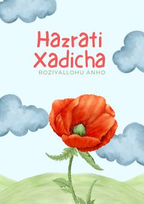

HXHazrati Xadicha roziyallohu anhoning hayoti va axloqi haqida hikoya qiluvchi asar.
Kitobda Islom dinining ilk davridagi buyuk ayollardan biri, Payg‘ambarimiz Muhammad alayhissalomning zavjasi Hazrati Xadicha roziyallohu anhoning hayoti, axloqi va savdo-sotiqdagi faoliyati haqida hikoya qilinadi. U kishining pokizaligi, sadoqati hamda Islom tarixidagi o‘rni haqida qisqacha ma'lumotlar berilgan.